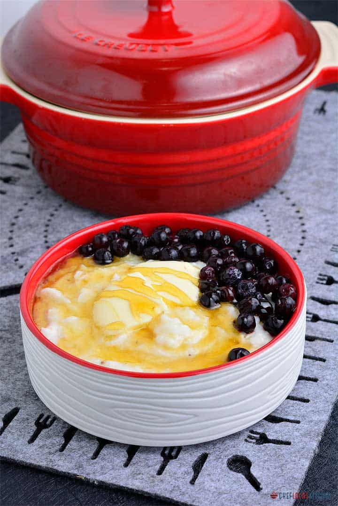

Grits

A true home-style classic
A welcoming classic for the long day ahead
Ingredients
- 2 1/2 cups (590ml) water
- 1/2 teaspoon kosher salt, plus more as desired
- 1/2 cup (85g) yellow or white corn grits, preferably stone-ground
- 2 tablespoons (30g) unsalted butter
Steps
- In a 2-quart saucepan, combine water and salt and bring to a boil. While whisking, sprinkle in grits, then return to a boil. Reduce heat to low, cover, and cook, whisking and scraping bottom well every 2 to 3 minutes, until you reach your desired consistency: runny with some remaining gritty texture, about 30 minutes; thick and creamy but flowing, about 45 minutes; or stiff and able to hold its shape while barely flowing, about 1 hour. Whisk in extra water, a tablespoon or two at a time, at any point if your grits become thicker than you'd like.
- Whisk in butter until fully melted and incorporated, then remove from heat. Season with additional salt, if needed.
- Serve as desired.